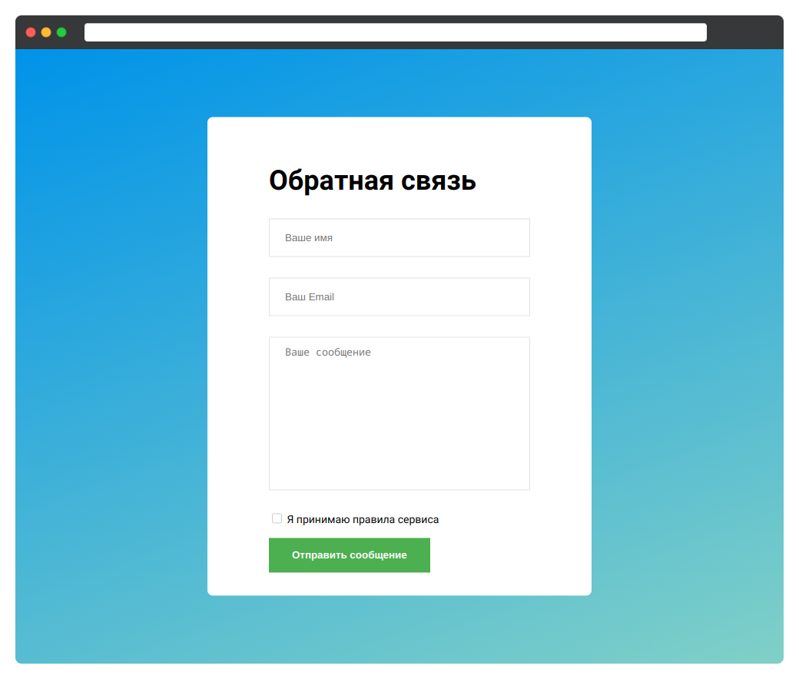

Создайте форму обратной связи по макету ниже. Форма состоит из пяти основных элементов:

.form-input.
Отступ снизу от каждой обёртки создаётся с помощью класса mb-2. Для
каждого текстового поля обязательно наличие <label/>, который
будет скрыт с помощью класса sr-only.
small и
mb-1.
Реализацию классов mb-2, mb-1, sr-only,
small можно посмотреть в файле form.css.
Для элементов input (кроме чекбокса) и textarea добавьте
описания через атрибут placeholder
Реализуйте стили form-input по следующему ТЗ.
form-input должны иметь блочное
отображение и иметь ширину в 100%
box-sizing со значением
border-box. Поля имеют сплошную границу в 1 пиксель и цветом
#e2e2e2.
200 пикселей. Запретите
пользователю управлять размерами этого поля.
Для выбора всех потомков в CSS используется селектор *. Например,
конструкция:
.block * {
color: white;
}
установит белый цвет для всех элементов, которые вложены в блок с классом
.block.
Селектор так же можно использовать в комбинации с другими, например
>, тогда конструкция
.block > * {
color: white;
}
установит белый цвет для всех элементов, которые лежат непосредственно в
.block, то есть являются прямыми потомками.